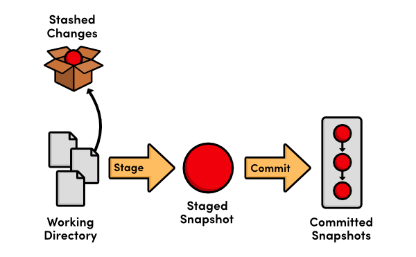

Git is a free and open source distributed version control system with speed and efficiency
# Debian-based distribution sudo apt install git # Fedora sudo yum install git # Arch sudo pacman -S git
# MacPorts sudo port install git # Homebrew brew install git
Download installer for Windows
ls -la ~/.ssh
# get common usage on 'git diff' tldr git-diff
# get all available information on 'git status' git status --help # same as 'man git-status' # get a quick help on 'git checkout' git checkout -h
git init
mkdir oh_my_project && cd oh_my_project git init
cd /path/to/my/repo git config user.name "Your name" git config user.email "xxx@espressif.com"
It will store the setting inside the individual repository: /path/to/your/repo/.git/config
/path/to/your/repo/.git/config
Advanced practice : Force Git to look for your identity only within a repository's settings
git config --global user.useConfigOnly true
Check what files Git will add to your repository with command git status
git status
Review the resulting list of files, tell Git which of the files to place into version control (avoid adding files with confidential information)
git status git add <file/directory name #1> <file/directory name #2> <...>
If all files in the list should be added to version control
git add -A
Commit all files that have been added, along with a commit message
git commit -m "add README.md" # if you omit the -m parameter, # your default editor will open, # and you can edit and save the commit message there
A commit is like a save or snapshot of your entire project
You can now push it to a remote repository, and later you can jump back to it if necessary
git remote add
git remote add origin ssh://git@gitlab.espressif.cn:27227/srmao/oh-my-project.git
git remote set-url origin ssh://git@bitbucket.server.com:7999/username/project.git
git remote -v
Copy your local repository to the remote
Adding --set-upstream (or -u) created an upstream reference which is used by argument-less Git commands (e.g. git pull)
--set-upstream
-u
git pull
git push --set-upstream origin master
git log --oneline -10
git log -L 1,5:README.md
git log --decorate --oneline --graph -20
git log --pretty=format:'%C(red)%h%Creset -%C(yellow)%d%Creset %s %C(green)(%cr)%C(yellow)<%an>%Creset'
%C(color_name)
%h
%Creset
%d
%s
%cr
%an
git log -G "#define MODEM_COMMAND_TIMEOUT_MODE_CHANGE"
git log --all --grep "esp_modem"
git log --since '3 days ago' git log --author=morris
foo
master
git log master..foo
git config --global alias.ci "commit" git config --global alias.st "status"
~/.gitconfig
[alias] ci = commit st = status gl = log -n 20 --date-order --format=\"%Cgreen%h %Cred[%ci] %Creset <%an>%C(yellow)%d%Creset %Creset %Cgreen%s %Creset \"
git add --all
git add .
git add -u
git restore --stage <file>
git diff --cached
git rm filename
git rm --cached filename
For files that you want never under version control, create a file named .gitignore before staging
.gitignore
# ignore files called '.config' .config # ingore directories bin/ # ignore files by extension *.o # matches all files 'foo.txt' in 'bar' and all sub-directories bar/**/foo.txt # ignore all .a files but lib.a *.a !lib.a
.gitkeep
git clean -Xn # display a list of ignored files git clean -Xf # remove the previously displayed files
git status --ignored
git update-index --assum-unchanged my-file.txt
git add
git commit
git commit -am "Commit message here"
git commit --amend
--force
git config user.name "new name" git config user.email "email@example.com" git commit --amend --reset-author
git commit -m "message" --author "John Smith <johnsmith@example.com>"
git commit -m "Fix memory leak" --date 2018-07-03
vfs/fatfs: fix stat call failing when called for mount point FATFS does not support f_stat call for drive root. When handling stat for drive root, don't call f_stat and just return struct st with S_IFDIR flag set. Closes https://github.com/espressif/esp-idf/issues/984
git diff
git diff --staged
git diff HEAD
git diff 1234abc..6789def # old..new
git diff 1234abc 6789def myfile.txt
git diff --no-prefix > some_file.patch
patch -p0 < some_file.patch
git checkout -- file.txt
git checkout 789abcd
git branch <name> [<start-point>]
git checkout <name>
git checkout -b <name> [<start-point>]
git checkout -b <name> <remote_name>/<branch_name>
git branch # List local branches git branch -r # List remote branches git branch -a # List remote and local branches
git push origin --delete <branchName>
git branch -d <branchName> # Won't delete the branch if it has unmerged changes git branch -D <branchName> # Delete it event if it has unmerged changes
git checkout -
git branch -m new_branch_name
git branch -m branch_you_want_rename new_branch_name
git branch -a --contains <commit>
feature/xxx
bugfix/xxx
release/v4.0
git clone
cd <path where you would like to clone to create a directory> git clone https://github.com/username/projectname.git # ssh version of the command git clone git@github.com:username/projectname.git
git clone [repo_url] --depth 1
git fetch --unshallow
git remote set-url remote-name https://github.com/username/repo2.git
git remote add github git-repository-url
git push <remote_name> <branch_name>
git push [remote-name] --delete [branch-name]
git fetch [remote-name] --prune
git fetch remote-name git merge remote-name/branch-name
fetch
merge
git pull --rebase remote-name branch-name
rebase
git rebase -i HEAD~3
git rebase --abort
git push --force-with-lease # this can be solved appending a "force" option

When working on a project, you might be half-way through a feature branch change when a bug is raised against master. You're not ready to commit your code, but you also don't want to lose your changes. This is where git stash comes in handy.
git stash git stash --include-untracked # include all untracked files git stash save "<whatever message>" # include a message with stash
git stash list
git stash pop git stash pop stash@{n} # apply specific stash and remove it from stack
git stash apply
git stash clear # remove all stash git stash drop # remove the last stash
git worktree add path/to/directory -b new_branch
git worktree list
git worktree prune
To tag specific points in history (e.g. release point) as being important.
git tag
git tag <tag_name>
git tag tag-name commit-id
git push origin tag-name
git clone --recursive https://github.com/username/repo.git
git submodules update --init --recursive
git submodule add https://github.com/ARMmbed/littlefs.git
.gitmodules
git submodule update
git mv /path/to/module new/path/to/module
git submodule deinit the_submodule git rm the_submodule
# start the git bisect git bisect start # give a commit where the bug doesn't exist git bisect good 49c747d # give a commit where the bug exist git bisect bad HEAD
# tell git the revision is good git bisect good # if the revision contains the bug, then tell git it's bad git bisect bad
git bisect reset
git blame test.c
git blame -w test.c
git blame -L 1,10 test.c
git blame -L 108,+30 test.c
# convert all commits since <commit-reference> (not including it) git format-patch <commit-reference>
.patch
git apply some.patch
git am some.patch git am *.patch # apply all patch files
git clean -i
git clean -f
git clean -fx
ProGit Book
GitHug
GitHug Walk Through Guide
Learn Git Branching